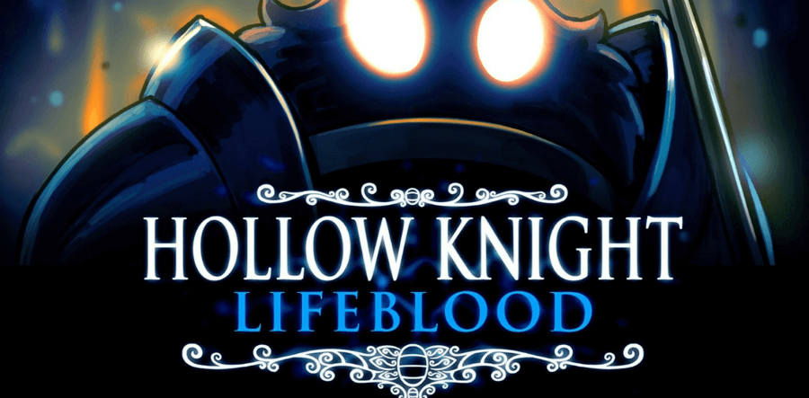

Nueva actualización: Lifeblood
Hollow Knight ha recibido una actualización la cual mejoran y cambian varios aspectos del juego,
añaden un nuevo boss y nuevos elementos para el mapa.
Esta actualización no tiene teaser, ya que no forma parte de las 3 expansiones que estaban planeadas.
Esto es lo que incluye la actualización:
Nuevo jefe:
Caballero de la colmena.
Herramientas del mapa:
Se han añadido marcadores.
El menu principal ahora se puede cambiar entre los siguientes:
Clasico.
Hidden dreams.
Grimm Troupe.
Lifeblood.
Infected (desbloqueado al derrotar al jefe final).
Void (desbloqueado al pasarse el final verdadero).
Steel soul (desbloqueado al pasarse al completar el modo "Alma de acero").
Cambios visuales:
La zona de la colmena tiene un rediseño visual completo .
Cambio a las paleta de color de algunas areas.
Las luces de bocasucia ahora tiene son más vivas y se notan más.
Morir en el modo Alma de acero ahora tiene una animación única.
Algunas zonas en la ciudad de lagrimas ahora usan un matiz y tono lila.
Nuevo icono al conseguir un logro.
La animación cuando se viaja con la estación de ciervos se ha retocado con luces colgantes, y además ahora esta animación se puede saltar.
Cambios a enemigos:
Las crías de la colmena son más grandes y tienen más vida.
El tirano de almas ya no puede ser tambaleado.
Los guardianes de la colmena ahora quitan 2 de vida.
La colmena ahora tiene una cantidad de enemigos superior.
El señor desleal ahora tiene una nube de infección alrededor suyo.
El señor desleal ahora tiene una nueva animación de muerte cuando estas peleando junto a Cloth
El musgoso volátil ahora explota más rápido al morir.
Cambios a los NPC:
El Defensor del estiercol tiene dialogos extra cuando el jugador derrota al Defensor blanco 5 veces.
Nuevos dialogos de la reina de la colmena Vespa cuando el jugador ha derrotado al Caballero de la colmena.
Divine ahora tiene nuevos dialogos cuando el jugador habla con ella mientras tiene equipado el blasón del defensor.
La secuencia de los soñadores ahora tiene nuevas secuencias despues de la primera pelea contra Hornet.
Cambios a los amuletos:
Tremanido ahora tiene un coste de 3 espacios.
Canción de tejedora y maestro de sprints ahora tienen una nueva interacción.
Canción de tejedora y canción de larvas ahora tienen una nueva interacción.
Cambios de audio:
Funglobo ahora tiene un nuevo sonido de ataque.
Engulletontos tiene un nuevo sonido de ataque.
Carcasa alada ahora tiene un nuevo sonido cuando le atacas.
Nueva OST para peleas tipo arena/oleadas en la ciudad de lagrimas.
Nuevo sonido al romper una seta en Páramos fúngicos.
Bretta ahora tiene un sonido de miedo cuando la encuentras por primera vez.
24/04/2018